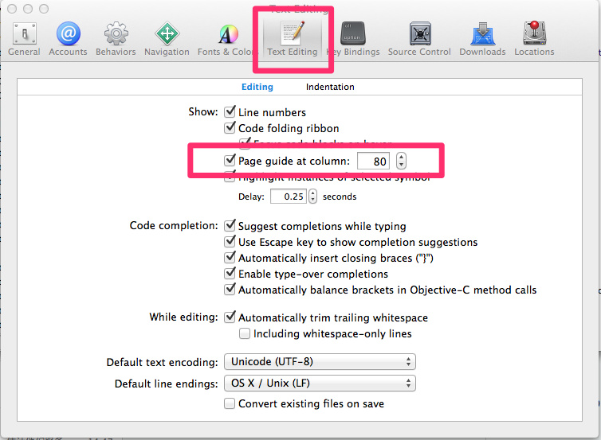
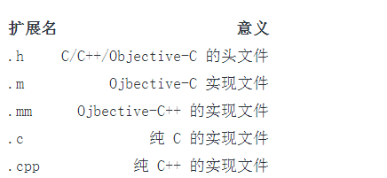
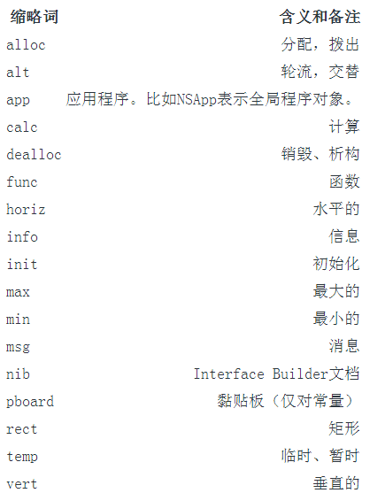

本文是投稿文章，作者：IOS_Tips（微信公众号）
Objective-C 是 C 语言的扩展，增加了动态类型和面对对象的特性。它被设计成具有易读易用的，支持复杂的面向对象设计的编程语言。它是 Mac OS X 以及 iPhone 的主要开发语言。
Cocoa 是 Mac OS X 上主要的应用程序框架之一。它由一组 Objective-C 类组成，为快速开发出功能齐全的 Mac OS X 应用程序提供支持。
而在日常的编程中，我们除了要写代码，还需要去阅读别人的代码，熟悉过往的业务逻辑。不知，你可曾发过牢骚：这代码怎么能这么写呢？有些时候我们的代码，也会被别人去读，不知你可曾想过，当别人读到你的代码的时候会作何评价。诚然，“让代码能够工作”是做为开发者的头等大事。但是，代码的可维护性却是更加影响深远的一件事情。你的代码既有可能在下一个版本中被修改，也极有可能被交给另外的同事去修改。毕竟我们写代码，不止是在和机器沟通，而且也是在和人沟通——和其他的程序员沟通。大家都知道“学好普通话，走遍天下都不怕”，同样的道理：写出一手漂亮的代码，你和谁沟通都没问题。
即使你的原始代码修改之后，其代码风格和可读性仍会影响到可维护性和可扩展性。即使代码不复存在，你的风格和律条仍存活下来。
下面我们将围绕一些基本的准则展开讨论，目的是让我们写出一手漂亮的代码，更好的用代码与其他同事沟通，也为了提高我们代码的可维护性和可修改性，也是为了让我们自己工作的地方有一个愉悦的代码环境。
（PS：当你真的按照这些看似偏执的规则去做的时候，你就真的能够发现“伟大来自细节”，而且会受益匪浅。保剑锋自磨砺出，梅花香自苦寒来。）
总则
1.Don’t repeat your self.
2.代码自注释，依靠代码本身来表达你的设计意图，不要依赖注释。
3.单一指责，无论是类、函数、模块、包尽可能令其指责纯净且单一。
4.死程序不说谎，不要因为防止Crash写奇葩的代码。程序Crash了，反而更容易查找错误。
5.借用美国童子军军规：让营地比你来时更干净。
格式
1.任意函数长度不得超过50行。
2.任意行代码不得超过80字符。可以在设置中设置超过80个字符的提醒。

3.在定义函数的行前留白一行
4.功能相近的代码要放在一起。
5.使用#pragma来切分不同功能区域的代码。
6.二元运算符和参数之间需要放置一个空格，一元运算符、强制类型转换和参数之间不放置空格。关键字之后圆括号之前需要放置一个空格.
void *ptr = &value; + 10 * 3;
NewType a = (NewType)b;
for (int i = 0; i < 10; i++) {
doCoolThings();
}7.长的字面值应被拆分为多行。
NSArray *theShit = @[
@"Got some long string objects in here.",
[AndSomeModelObjects too],
@"Moar strings."
];
NSDictionary *keyedShit = @{
@"this.key": @"corresponds to this value",
@"otherKey": @"remoteData.payload",
@"some": @"more",
@"JSON": @"keys",
@"and": @"stuff",
};命名
命名是编程中最基本的技能，我们给变量、函数、类、包等等命名。给他们以名字，让他们有意义，既能表示他们到底是做什么的，也能将其与其他变量区别开来。而通过，语言的发展史，我们也能够看到“方便编程人员理解和使用”一直都是编程语言发展的动力之一，而命名则是其最最核心的环节。像人一样娶一个好名字至关重要，“丁当”总比“狗蛋”来的好听。 为什么要命名？命名代表着抽象，我们使用名字将一些没必要关系的细节隐去，减少我们自己的记忆成本，也更加方便我们理解。用过C语言的人都知道，一个变量名最终会转化成类似于~~~0x11111111~~~之类的地址，相比去理解和记忆这些地址，用一个更加抽象的变量名来代表这些地址。无论从理解还是记忆上都要方便的。
命名一定要“名副其实”，尽可能使用有意的名称，而且这个意义和指称的变量真实意义相关。
尽量不要出现没有任何意义的命名类似于下述形式的命名：
int a = 1; int b = 3; CGPoint point = CGPointMake(a,b);
如果换成下面的形式是不是可读性强了很多：
int startX = 1; int startY = 3; CGPoint startPoint = CGPointMake(startX,startY);
命名首字母大写，其他命名首字母小写。并且采用驼峰格式分割单词。
例如：BWTest
使用能够读出来的名称
人类长于记忆和使用单词。大脑中的相当一部分就是用来容纳和处理单词的。单词如果能够读的出来，则非常方便我们阅读和理解。
错误的示例： genymdhms （生成日期,年、月、日、时、分、秒）
正确的实例： generationTimeStamp
使用可搜索的名称
单字母名称和数字常量有一个问题，就是很难在一大篇文字中找出来。试想一下，你找~~~MAX_CLASSES_PER_STUDENT~~~容易还是找数字7容易。
文件名
文件名反映出了其实现了什么类（包括大小写），你需要遵循所参与醒目的约定。
文件的扩展名及其意义如下：

类别的扩展名以“被扩展的类名+自定义命名部分组成”
例如：NSSstring+Utils.h
缩略词
虽然方法命名不应使用缩略词，然而有些缩略词在过去被反复的使用，所以使用这些缩略词能更好的的表达代码的含义。下表列出了Cocoa可接受的缩略词。

以下是一些常用的首字母缩略词：ASCII,PDF,XML,HTML,URL,RTF,HTTP,TIFF,JPG,PNG,GIF,LZW,ROM,RGB,CMYK,MIDI,FTP…
宏定义全部字母大写，例如:#define BW_DEBUG 1
常量定义，字符串定义以小写字母 k 开头，随后首字母大写
static NSString* const kBWBarTitle = @"动态";
如果要定义常量使用static const优于宏定义，前者会进行类型检查
因为OC没有命名空间的概念，所以使用前两个或者多个字母来表示命名空间，例如”NSObject中的NS”，我们也使用自己的命名空间。比如
红点中使用了VAS:VASAddValueInfo... 钱包中使用了QW:QWApplication....
注释
让代码自注释，不要依赖注释来解释自己的设计或者编码意图。除了特殊情况外，代码中不要有多余的注释。
函数
函数长度不要超过50行，小函数要比大函数可阅读性和可复用性强。
零元函数最好，一元函数也不错，二元函数担心了，三元函数有风险，高于三元需重构。函数的参数越多，引起其变化的因素就越多。越不利于以后的修改。
不知道当你看到如下形式的函数的时候，是什么想法：
- (void)RequestGetLocation:(int)lat lon:(int)lon alt:(int)alt isMars:(BOOL)yn bJiejingSOSO:(BOOL)bJiejingSOSO;
尽量少的写有副作用的函数
尽量不要出现火车链式的命名，如果可以尽量使用过程变量替代。
反例例如：
_needLogoutAccount = [[[[BWAppSetting GetInstance] appSetting] valueForKey:NeedLogoutAccounts] retain];
考虑如果改成下述模样，是不是可读性一下子提高了很多：
BWAppSetting* shareSetting = [BWAppSetting GetInstance]; BWLockDictionary* defaultSettings = [shareSetting appSetting]; _needLogoutAccount = [[defaultSettings valueForKeyPath:NeedLogoutAccounts] retain];
调用时所有参数应该在同一行
[myObject doFooWith:arg1 name:arg2 error:arg3];
或者每行一个参数，以冒号对齐：
[myObject doFooWith:arg1 name:arg2 error:arg3];
对于参数过多的函数，尽量使用后面一种对其方式。
不要使用下面的缩进风格：
[myObject doFooWith:arg1 name:arg2 // some lines with >1 arg error:arg3]; [myObject doFooWith:arg1 name:arg2 error:arg3]; [myObject doFooWith:arg1 name:arg2 // aligning keywords instead of colons error:arg3];
如果对传入参数进行数据保护尽量不要用~~~if(!objc)~~~,使用断言来处理。
- (void) sendArgs:(NSDictionary*)args {
NSAssert(args, @"args is nil");
.....
}方法参数名前一般使用的前缀包括“the”、“an”、“new”。
示例:
- (void) setTitle: (NSString *) aTitle; - (void) setName: (NSString *) newName; - (id) keyForOption: (CDCOption *) anOption - (NSArray *) emailsForMailbox: (CDCMailbox *) theMailbox; - (CDCEmail *) emailForRecipients: (NSArray *) theRecipients;
Block相关
在block中使用到self变量的时候，一定要先weak再strong.
__weak typeof(self) weakSelf = self;
[self doABlockOperation:^{
__strong typeof(weakSelf) strongSelf = weakSelf;
if (strongSelf) {
...
}
}];控制结构
顺序结构
分支结构
if-else结构超过四层的时候，要考虑重构。多层的ifelse结构极其难维护。
当需要满足一定条件时才执行某项操作时，最左边缘应该是愉快路径代码。不要将愉快路径代码内嵌到if语句中。多个return是正常合理的。
良好的风格：
- (void) someMethod {
if (![someOther boolValue]) {
return;
}
//Do something important
}反面教材：
- (void) someMethod {
if ([someOther boolValue]) {
//Do something important
}
}所有的逻辑块必须使用花括号包围，即使条件体只需编写一行代码也必须使用花括号。
良好的风格：
if (!error) {
return success;
}反面教材：
if (!error) return success; ... if (!error) return success;
循环结构
遍历可变容器之前，需要复制该容器，遍历该容器的Copy.
//typeof(self.cells) is NSMutableArray
NSArray* cellArrays = [self.cells copy];
for(UITableViewCell* cell in cellArrays) {
...
}尽量不要使用异常，尤其是不要将异常做为业务逻辑的一部分，在异常中尝试进行灾难恢复。
类与对象
明确指定构造函数
注释并且明确指定你的类的构造函数。
对于需要继承你的类的人来说，明确指定构造函数十分重要。这样他们就可以只重写一个构造函数（可能是几个）来保证他们的子类的构造函数会被调用。这也有助于将来别人调试你的类时，理解初始化代码的工作流程。 ###重载指定构造函数
当你写子类的时候，如果需要 init… 方法，记得重载父类的指定构造函数。
如果你没有重载父类的指定构造函数，你的构造函数有时可能不会被调用，这会导致非常隐秘而且难以解决的 bug。
重载 NSObject的方法
如果重载了 NSObject 类的方法，强烈建议把它们放在 @implementation 内的起始处，这也是常见的操作方法。
通常适用（但不局限）于init…，copyWithZone:，以及dealloc方法。所有init…方法应该放在一起，copyWithZone: 紧随其后，最后才是dealloc 方法
初始化
不要在 init 方法中，将成员变量初始化为 0 或者 nil；毫无必要。
现代的 Ojbective-C 代码通过调用 alloc 和 init 方法来创建并 retain 一个对象。由于类方法 new 很少使用，这使得有关内存分配的代码审查更困难。
保持init函数简洁，不要让init函数成为千行的大函数，当超过50行的时候，适当考虑分拆一下。
良好的风格实例：
- (void) commonInit
{
_rightAppendImageView = [UIImageView new];
[self.contentView addSubview:_rightAppendImageView];
}
- (instancetype) initWithStyle:(UITableViewCellStyle)style reuseIdentifier:(NSString *)reuseIdentifier
{
self = [super initWithStyle:style reuseIdentifier:reuseIdentifier];
if (!self) {
return self;
}
[self commonInit];
return self;
}UIView的子类初始化的时候，不要进行任何布局操作。布局操作在LayoutSubViews里面做。
UIView的子类布局必须在layoutSubViews里面进行，需要布局的时候调用~~~setNeedLayout~~~来告诉系统，需要重新布局该View，不要直接调用~~~layoutSubViews~~~
保持公共 API 简单
"保持类简单；避免 “厨房水槽（kitchen-sink）” 式的 API。如果一个函数压根没必要公开，就不要这么做。用私有类别保证公共头文件整洁。"
与 C++ 不同，Objective-C 没有方法来区分公共的方法和私有的方法 – 所有的方法都是公共的（译者注：这取决于 Objective-C 运行时的方法调用的消息机制）。因此，除非客户端的代码期望使用某个方法，不要把这个方法放进公共 API 中。尽可能的避免了你你不希望被调用的方法却被调用到。这包括重载父类的方法。对于内部实现所需要的方法，在实现的文件中定义一个类别，而不是把它们放进公有的头文件中。
// GTMFoo.m
#import "GTMFoo.h"
@interface GTMFoo (PrivateDelegateHandling)
- (NSString *)doSomethingWithDelegate; // Declare private method
@end
@implementation GTMFoo(PrivateDelegateHandling)
...
- (NSString *)doSomethingWithDelegate {
// Implement this method
}
...
@end在OC2.0以后，你可以在实现文件中使用，类扩展来生命你的私有类别：
@interface GMFoo () { ... }每个文件中只创建或者实现一个类。同一个文件中不要存在多个类。
Protocol单独用一个文件来创建。尽量不要与相关类混在一个文件中。
类的私有变量以”_“开头。
创建私有变量，份两种情况。 第一种情况子类需要继承的，在头文件中定义：
// BWTest.h
@interface BWTest : NSObject
{
NSString* _name;
}第二种情况，不需要子类继承的，在实现文件中以Category的方式定义：
// BWTest.m @interface BWTest () { NSString* _name; }
@implementation BWTest
...
@end公有变量在一般使用属性的方法定义 @property (….) …
使用委托模式，设置delegate的时候，在ARC下使用 weak ;在MRC下使用 retain ,并且在dealloc中将其指针置空。
外部引用对象，外部不会发生set操作的对象，比如在创建界面元素的时候，使用readonly属性。
@interface BWView : UIView @property (nonatomic, strong, readonly) UIView* backgoundView; @end @implementation BWView @end
在类定义中使用到自己定义的类的时候，尽量不要在头文件中引入自己定义的类的同文件，使用 @class 替换。在实现文件中引入相应头文件。
例如：
//BWTest.h @class BWDataCenter; @interface BWTest : NSObject @property (nonatomic, strong) BWDataCenter* dataCenter; @end
//BWTest.m
import “BWDataCenter.h”
@implementation BWTest @end
如果一个类只是DTO(data transfer object)，只是作为数据传输使用，可以不用引入使用的自定义的类的头文件，只是用 @class ，表明相应的自定义的类型。
对于DTO类型的对象，在给其成员变量设置值的时候可以考虑使用KVC，实现下述函数：
- (void) setValue:(id)value forKey:(NSString *)key
{
if ([key isEqualToString:kRedDotAppInfoPath]) {
....
} else if ...
....
}
- (id) valueForKey:(NSString *)key {
....
}点标记语法
属性和幂等方法（多次调用和一次调用返回的结果相同）使用点标记语法访问，其他的情况使用方括号标记语法。 良好的风格：
view.backgroundColor = [UIColor orangeColor]; [UIApplication sharedApplication].delegate;
反面实例：
[view setBackgroundColor:[UIColor orangeColor]]; UIApplication.sharedApplication.delegate;
Cocoa相关
每个NSObject都有其生命周期，要在其生命周期的合适的时机做合适的事情。
例如：在初始化的时候，进行变量初始化，在销毁的时候，销毁变量等等。
尽量不要在界面布局的写任何死数字
错误的示范：
CGFloat delta = SYSTEM_VERSION >= 7.0 ? 0.0f : -14.0f; newFrame = CGRectMake(245 + delta, (self.frame.size.height - tipNewSize.height)/2, tipNewSize.width, tipNewSize.height); dotFrame = CGRectMake(258.0 + delta, (self.frame.size.height - tipDotSize.height)/2, tipDotSize.width, tipDotSize.height); iconFrame = CGRectMake(245 + delta, (self.frame.size.height - tipIconSize.height)/2, tipIconSize.width, tipIconSize.height); numFrame = CGRectMake(245+delta, (self.frame.size.height - tipNumSize.height)/2, tipNumSize.width, tipNumSize.height);
正确的示范：
CGFloat cellHeight = CGRectGetHeight(self.frame); CGFloat cellWidth = CGRectGetWidth(self.frame); CGRect numFrame = CGRectZero; numFrame.size = CGSizeMake(cellWidth,cellHeight); ...
布局时尽量使用相对布局，比如使用子View在父View中的相对位置。
在使用UITableView和UITableViewCell的时候一定要考虑到cell被复用的情况，在合适的时机对重用的cell进行清除操作。
为UITableViewCell功能或者子View的时候有限考虑子类化。尽量不要使用在delegate中为Cell添加View。子类化，利于Cell重用和对cell内新添加的子View的布局。
良好的风格示例：
@interface BWSettingCell : UITableViewCell
@property (nonatomic, strong, readonly) UIImageView* rightAppendImageView;
@end
@implementation BWSettingCell
- (instancetype) initWithStyle:(UITableViewCellStyle)style reuseIdentifier:(NSString *)reuseIdentifier
{
self = [super initWithStyle:style reuseIdentifier:reuseIdentifier];
if (!self) {
return self;
}
_rightAppendImageView = [UIImageView new];
[self.contentView addSubview:_rightAppendImageView];
return self;
}
- (void) layoutSubviews
{
[super layoutSubviews];
CGSize rightImageSize = _rightAppendImageView.image.size;
_rightAppendImageView.frame = CGRectMake(CGRectGetWidth(self.frame) - rightImageSize.width,
(CGRectGetHeight(self.frame) - rightImageSize.height) /2,
rightImageSize.width,
rightImageSize.height);
}
@end反面教材：
- (UITableViewCell*) tableView:(UITableView *)tableView cellForRowAtIndexPath:(NSIndexPath *)indexPath
{
static NSString* const settingCellIdentify = @"settingCellIdentify";
UITableViewCell* cell = [self.tableView dequeueReusableCellWithIdentifier:settingCellIdentify];
if (!cell) {
cell = [[UITableViewCell alloc] initWithStyle:UITableViewCellStyleValue1 reuseIdentifier:settingCellIdentify];
}
static int kSettingCellSubViewTag = 90001;
//非常错误的地方，尽量不要这样写
[cell.contentView removeAllSubviews];
UIImageView* rightAppendingView = [UIImageView new];
rightAppendingView.image = nil;
rightAppendingView.frame = CGRectMake(230, 8, 30, 30);
[cell.contentView addSubview:rightAppendingView];
return cell;
}设计模式相关
使用设计模式的最基本原则，除非你明确知道自己要做件什么事情，而且知道使用特定设计模式带来的影响，否则不要刻意的使用设计模式。
单例模式
创建一个单例模式可以使用dispatch_once
+ (instancetype)defaultManager
{
if (!_defaultManager) {
static dispatch_once_t onceToken;
dispatch_once(&onceToken;, ^{
_defaultManager = [[FlappyEggManager alloc] init];
});
}
return _defaultManager;
}观察者模式
如果只是单纯的传递数据，不要使用观察者模式，容易导致逻辑链断裂。
参考资料
1.《Clean Code》
2.《编写可阅读代码的艺术》
3.《Google Objective-C Style Guide》
4.《Introduction to Coding Guidelines for Cocoa》
5.《iOS应用开发最佳实践系列一：编写高质量的Objective-C代码》
想要阅读更多内容，欢迎关注微信公共账号IOS_Tips。